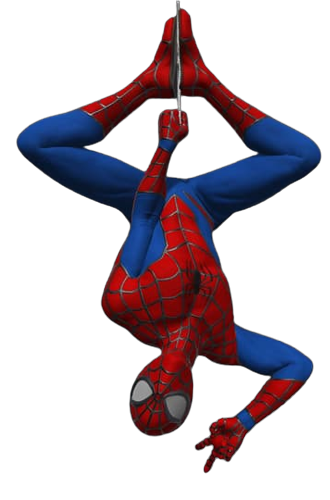

Spider-Man, portrayed by Tom Holland, is a beloved Marvel character in the Marvel Cinematic Universe (MCU). Tom Holland's portrayal of Peter Parker, a.k.a. Spider-Man, brings a youthful and relatable charm to the character. Introduced in "Captain America: Civil War," Holland's Spider-Man showcases his incredible agility, web-slinging abilities, and his journey as a young superhero balancing his personal life and responsibilities. With his appearances in films like "Spider-Man: Homecoming," "Spider-Man: Far From Home," and team-ups in the "Avengers" movies, Tom Holland's Spider-Man has become a fan-favorite and a significant part of the MCU.
